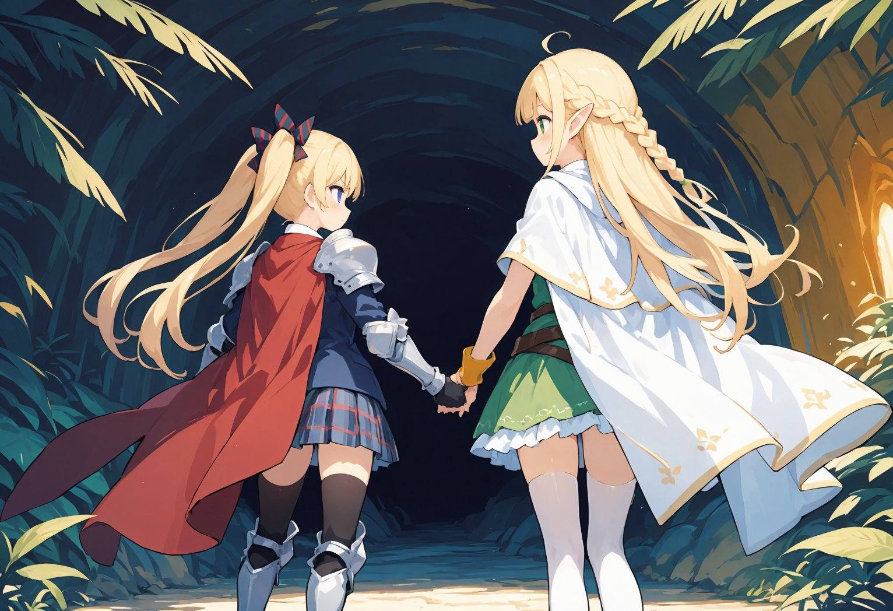
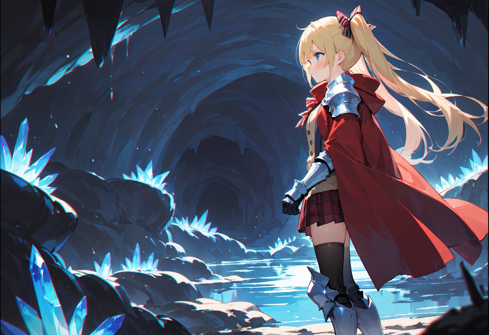

第11話
エルフの里を出発して数日。 二人の前に立ちはだかるのは、鬱蒼と茂る森の奥深くに隠された洞窟だった。 薄暗くひんやりとした空気が漂い、足元には苔が広がり、滴る水音が響く。 不気味な雰囲気に、リリアは少し身を縮める。
「ここが、魔力の泉に繋がってる洞窟か……。」 美桜ちゃんはぐっと拳を握りしめながら入り口を見上げた。その瞳には、不安よりも好奇心と決意が光っている。
「リリアちゃん、大丈夫だよ！私たちなら絶対何とかなるって！」 「うん、ありがとう、ミオ。…でも、気をつけて。ここには危険な魔物がいるかもしれない。」 リリアの手にはエルフの長弓が握られ、美桜ちゃんは腰に剣を、背中には盾代わりのマントを身につけている。
洞窟の中に足を踏み入れると、暗闇が二人を包み込む。光を頼りに、美桜ちゃんが先頭を進みながら周囲を警戒する。
「ひゃっ！」 突然の物音に、リリアが声を上げる。何かが影から動いたかのように見えたが、気のせいだったのか静寂が戻る。
「リリアちゃん、しっかり！怖がってちゃダメだよ！」 「ご、ごめん……。」 不安げなリリアを、美桜ちゃんはにっこり笑顔で励ます。
暗い通路を進むほどに、不思議な光が奥から漏れ始めた。その光が魔力の泉へ繋がる手がかりなのか、それとも――。

「さぁ、行こう！きっと、この先に答えがあるはず！」 勇敢に進む美桜ちゃんと、彼女に支えられながら一歩一歩進むリリア。
二人は洞窟の奥へと慎重に足を進めていく。 狭い通路を抜けるたびに、天井はさらに高くなり、壁は黒く光る鉱石に覆われていた。 ほのかな魔力を帯びたその輝きが、暗闇をほんのわずかに照らし出す。
通路を抜けた先に広がっていたのは、異世界のような幻想的な光景だった。
目の前には広大な地下空間が広がり、その中心には巨大な湖が静かにたたずんでいる。 湖面は不気味なほど滑らかで、黒曜石のような闇を湛えながらも、中心からは淡い青白い光が溢れ出ていた。 その光が湖全体を覆い、洞窟の天井に浮かぶ無数の水滴を輝かせ、星空のような幻想的な風景を描き出している。
湖の縁には奇妙な形をしたクリスタルが無数に突き出ており、それらの表面には複雑な模様が浮かび上がっていた。 模様は緩やかに動いているように見え、見つめているだけで吸い込まれそうな不思議な感覚を与える。
「これが……魔力の泉……。」 リリアが呆然と呟く。 その声すら湖面に吸い込まれるように静かに響き、やがて消えた。
湖の中心部から立ち上る光の柱は、時折脈打つように明滅し、そのたびに空間全体に柔らかな風が吹き抜ける。 その風には強力な魔力が込められているのか、二人の体を包み込むような温かさと、同時に身を切るような冷たさを感じさせた。

「すごい……でも、なんだか嫌な感じがする。」 美桜ちゃんが震える声で呟いた。
ふと、湖面に小さな波紋が広がった。 まるで誰かが水面に触れたかのように――。 その瞬間、二人は息を飲んで立ち止まる。
湖の奥から、かすかな音が聞こえた。 何かが動いているような、かさり、と乾いた音。 それはまるで巨大な生き物が体をくねらせているような、聞くだけで身の毛がよだつ音だった。
「ミオ……奥に何かいる……。」 リリアが美桜ちゃんの袖を掴み、不安げに顔を上げる。
「大丈夫だよ、リリアちゃん。何か来たとしても、私が守るから。」 頼もしげに微笑む美桜ちゃんだったが、その目は湖の奥を鋭く見据えていた。
どこか遠くから、低いうなり声のような響きが洞窟内にこだまする。 それは決して人間のものではなく、異形の存在が潜む証であるかのようだった。 しかし、二人はその先に進むしか道がないと分かっていた――。
― この話はここまで ―